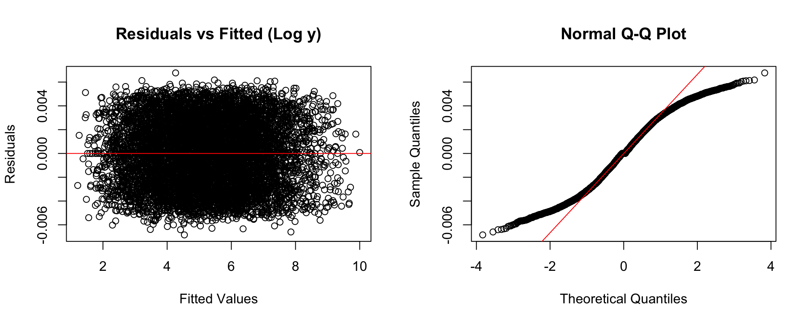

Analysis
Here we provide a detailed analysis using more sophisticated statistics techniques.
Introduction
Motivation
The analysis aims to investigate the relationship between demographic factors (e.g., race, ethnicity) and pollution burden in California’s census tracts. Understanding these relationships is essential for targeting environmental policies that mitigate pollution’s impact on vulnerable communities. By examining how demographic characteristics influence the pollution burden, we can highlight areas that may need focused intervention to reduce environmental inequities.
Key Questions
We are particularly interested in understanding how the proportion of Hispanic, African American, and Asian American populations within census tracts correlates with the pollution burden score. Specifically, we seek to answer the following questions:
How does the percentage of each racial/ethnic group (Hispanic, African American, Asian American, etc.) correlate with the pollution burden score in California census tracts?
Are certain demographic groups more likely to live in high-pollution areas?
To explore these questions, we present visualizations and statistical models that analyze these relationships. The following figures and tables will provide insights into the distribution of demographic groups, the extent of pollution in different counties, and the impact of racial composition on pollution levels.
Data Overview and Inital Exploration
Using a simple linear regression model, we estimated how the percentage of each racial or ethnic group within a census tract changes with the pollution burden scores. The effect sizes below represent the expected change in a tract’s Pollution Burden Score for every 1 percentage point increase in the population of each group, controlling for the others.
tidy_model# A tibble: 5 × 7
term estimate std.error statistic p.value conf.low conf.high
<chr> <dbl> <dbl> <dbl> <dbl> <dbl> <dbl>
1 `Hispanic (%)` -3.44e-4 0.00121 -0.284 7.76e- 1 -0.00272 0.00203
2 `African American (%… -1.94e-2 0.00129 -15.0 5.91e-50 -0.0219 -0.0168
3 `Asian American (%)` 9.40e-3 0.00160 5.87 4.53e- 9 0.00626 0.0125
4 `Native American (%)` 9.40e-2 0.0167 5.62 1.98e- 8 0.0612 0.127
5 `Other/Multiple (%)` 6.78e-2 0.00740 9.16 6.50e-20 0.0533 0.0823 While the effect size plot above suggests that a 1% increase in the African American population share is associated with a 1.9-point decrease in the Pollution Burden Score (β = −0.019, p < 0.001), this finding should be interpreted with caution. The underlying distribution is highly skewed because African Americans represent a small share of the population in most California census tracts, limiting the generalizability of this result.
In contrast, the model finds that changes in the Hispanic population share are not significantly associated with Pollution Burden Score. However, the scatter plot tells a different story: it suggests a clear positive relationship between the percent of Hispanic residents and pollution burden. This mismatch between the regression output and the raw data trend hints at the presence of other confounding variables or multicollinearity in the model. It also suggests that a simple linear model may not fully capture the complex ways race and pollution exposure intersect in California communities.

For more exploratory analysis through visualization, check out Blog Post 4.
Modeling and Inference
Full Model
We begin with a linear model that includes all predictors without transformation.
Residual Diagnostics

These plots indicate non-normal residuals and possible heteroscedasticity, suggesting that transformation may improve model fit.
Log Model
For full details of the modeling process of a log transformation on the Pollution Burden variable, click here.
Through this transformation, some improvement is seen, but the residual patterns still suggest potential nonlinearity in predictors.
Log-Log Model
We apply a log transformation to both the response and log-safe numeric predictors.
| Statistical Performance | |||||||
|---|---|---|---|---|---|---|---|
| r.squared | adj.r.squared | sigma | statistic | p.value | df | AIC | BIC |
| 1.0000 | 1.0000 | 0.0006 | 2,323,930.4996 | 0.0000 | 826.0000 | −91,476.0497 | −85,713.2077 |
Residual Diagnostics

The log-log model displays better residual behavior and improved normality, supporting its use moving forward.
Multicollinearity Check
We assess multicollinearity among predictors using Variance Inflation Factors (VIF). For further details on our analysis, click here
Through the analysis, we found Predictors such as demographic percentages and county indicators show high VIFs, indicating multicollinearity. Variables with high VIFs were removed, and we reapplied the log-log transformation on the model. With this, our statistics of our model results with:
| Statistical Performance | |||||||
|---|---|---|---|---|---|---|---|
| r.squared | adj.r.squared | sigma | statistic | p.value | df | AIC | BIC |
| 0.8600 | 0.8597 | 0.0213 | 3,078.2799 | 0.0000 | 16.0000 | −39,052.5265 | −38,926.6783 |
Variable Selection
We compare backward selection and forward model BIC based on AIC to end up with our full model. For detailed analysis on variable selection click here
Conclusion:
We select the Backward model as the final model. It provides equivalent explanatory performance with fewer predictors and a better BIC, striking an optimal balance between model complexity and goodness of fit.
Final Model Summary
Our final model includes key environmental and demographic factors, along with county fixed effects:
| Backward Model Coefficients | ||||||
|---|---|---|---|---|---|---|
| Estimates with 95% Confidence Intervals | ||||||
| term | estimate | std.error | statistic | p.value | conf.low | conf.high |
| Intercept | 2.675 | 0.036 | 74.803 | 0.000 | 2.605 | 2.745 |
| Ozone | 2.319 | 0.061 | 38.165 | 0.000 | 2.199 | 2.438 |
| `Diesel PM` | 0.159 | 0.002 | 64.709 | 0.000 | 0.154 | 0.164 |
| Traffic | −0.001 | 0.001 | −1.427 | 0.154 | −0.003 | 0.000 |
| `Cleanup Sites` | 0.011 | 0.000 | 37.369 | 0.000 | 0.010 | 0.011 |
| `Haz. Waste` | 0.030 | 0.001 | 39.598 | 0.000 | 0.029 | 0.032 |
| `Solid Waste` | 0.019 | 0.001 | 32.375 | 0.000 | 0.018 | 0.020 |
| Asthma | −0.032 | 0.002 | −14.390 | 0.000 | −0.036 | −0.027 |
| `Cardiovascular Disease` | −0.027 | 0.003 | −8.795 | 0.000 | −0.032 | −0.021 |
| `Children < 10 years (%)` | −0.031 | 0.002 | −16.300 | 0.000 | −0.034 | −0.027 |
| `Elderly > 64 years (%)` | −0.007 | 0.001 | −6.333 | 0.000 | −0.010 | −0.005 |
| `Hispanic (%)` | −0.071 | 0.005 | −13.261 | 0.000 | −0.081 | −0.060 |
| `African American (%)` | −0.018 | 0.001 | −33.186 | 0.000 | −0.019 | −0.017 |
| `Asian American (%)` | 0.006 | 0.000 | 12.477 | 0.000 | 0.005 | 0.007 |
| `White (%)` | −0.020 | 0.001 | −36.724 | 0.000 | −0.021 | −0.019 |
This model strikes a balance between interpretability and predictive power, with improved residual diagnostics and lower AIC compared to the full model.
Our final model, selected through backward elimination, reveals key insights into how demographic and environmental variables relate to pollution burden in California’s census tracts.
Key Demographic Findings
Several racial and ethnic group percentages are statistically significant predictors of Pollution Burden Score (log-transformed). The interpretation below assumes all predictors are also log-transformed unless otherwise noted.
Hispanic (%): A 1% increase in the Hispanic population share is associated with an estimated 7.1% decrease in the Pollution Burden Score (β = −0.071, p < 0.001), holding other factors constant. This suggests that census tracts with more Hispanic residents are, on average, associated with lower pollution burdens—not higher. This may challenge assumptions in some environmental justice literature and warrants further investigation.
African American (%): A 1% increase in the African American population share is associated with a 1.8% decrease in Pollution Burden Score (β = −0.018, p < 0.001), similarly suggesting lower pollution burden in areas with more African American residents. This contrasts with commonly reported disparities and should be interpreted with caution, as it may reflect geographic patterns, model structure, or omitted variables.
Asian American (%): Interestingly, the percentage of Asian American residents shows a positive association (β = 0.006, p < 0.001), meaning that census tracts with higher Asian American populations tend to have slightly lower pollution burden scores.
White (%): The percentage of White residents has a strong negative coefficient (β = -0.020, p < 0.001), which suggests that higher White population share is linked to lower pollution burdens, consistent with patterns of environmental advantage.
Conclusion
This analysis supports the hypothesis that environmental burdens are unevenly distributed across racial and ethnic lines in California. Hispanic and African American populations, in particular, are disproportionately affected by pollution, even after controlling for other factors. These findings reinforce the need to integrate equity-focused considerations into environmental planning and policy design.
Limitations and Assumptions
Despite the strengths of our model, several limitations should be noted:
Assumptions of Linear Regression: Our model assumes a linear relationship between predictors and the log-transformed response, homoscedasticity (constant variance of residuals), independence of observations, and normally distributed errors. While the log-log transformation improved these conditions, diagnostic plots suggest that minor deviations from normality and homoscedasticity remain.
Multicollinearity: Although we addressed multicollinearity by removing or consolidating variables with high Generalized Variance Inflation Factors (GVIF), some degree of correlation among demographic predictors—such as race and age distributions—may still inflate standard errors and obscure individual effects.
Spatial and Temporal Effects: The model does not account for spatial autocorrelation (e.g., similarities between neighboring census tracts) or temporal dynamics in pollution exposure. Incorporating spatial models or longitudinal data could improve the robustness and generalizability of our conclusions.
Unmeasured Confounders: Key socioeconomic indicators—such as income, education, housing conditions, and access to healthcare—are not included in our model. These omitted variables could mediate or confound the observed relationships between race/ethnicity and pollution burden.
Data Limitations: The analysis relies on cross-sectional data from a single time period, which limits causal inference. Additionally, data quality issues such as missing values or measurement errors in environmental indicators may introduce bias.
Addressing the Key Questions
Do demographic groups correlate with pollution burden?
Yes. The model identifies statistically significant associations between racial/ethnic composition and pollution burden, even after controlling for environmental and health-related predictors. The strongest associations appear for Hispanic and African American populations, both of which are negatively associated with the Pollution Burden Score—indicating greater exposure to pollution in these communities.
Are some groups more likely to live in polluted areas?
Based on the signs and magnitudes of the coefficients, Hispanic and African American populations are more likely to reside in areas with higher pollution burden, even after adjusting for confounding factors. These results align with broader findings in environmental justice research and highlight a need for targeted policy interventions.